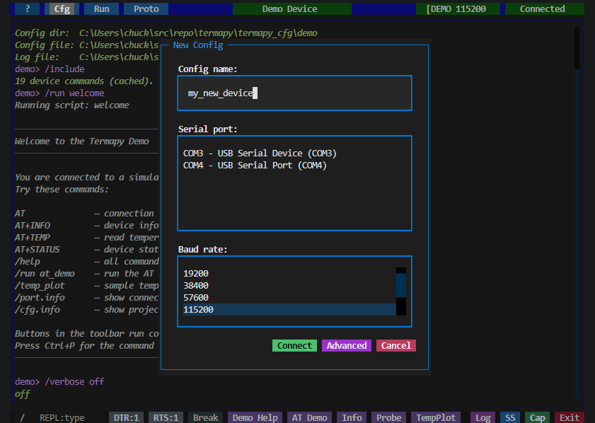
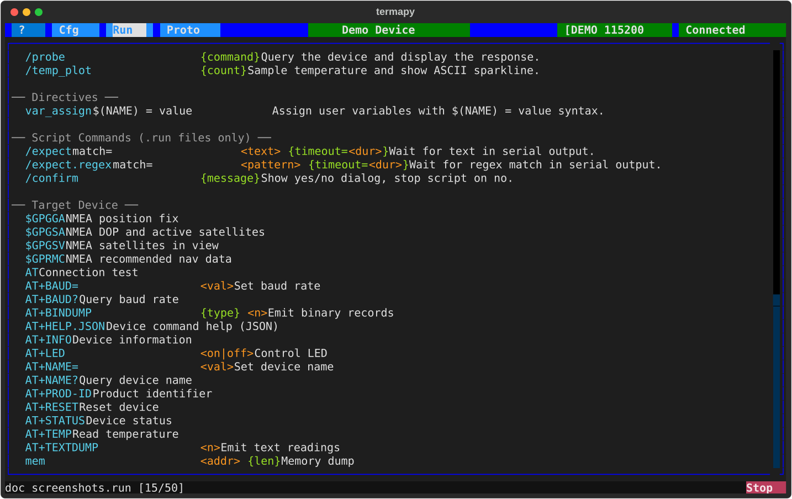

Getting Started¶
This guide covers connecting to your own serial device. If you haven't tried the demo yet, start with Installation.
Quick Setup¶

On first run or when clicking New in the config picker, the Quick Setup dialog lets you pick a port, baud rate, and config name in one step. Click Connect to start immediately, or Advanced to open the full JSON config editor with your choices pre-filled.
Launching with a config¶
termapy # auto-detect config
termapy my_device # find termapy_cfg/my_device/my_device.cfg
termapy my_device.cfg # load a specific config file
termapy termapy_cfg/my_device # load config from a folder
termapy --cfg-dir /path/to/cfgs # use a custom config directory
termapy --check my_device.cfg # validate config (no UI)
termapy --cli my_device # plain-text CLI mode
termapy --cli smoke_test.run # run a .run script in CLI mode
Config resolution — termapy finds your config automatically. Pass a bare
name like my_device and it looks in termapy_cfg/my_device/my_device.cfg.
Pass a folder and it looks for <foldername>.cfg inside. Pass a .cfg file
directly and it uses that.
Script files — passing a .run or .pro file infers the config from
the file's location (walks up the directory tree to find a .cfg file).
In CLI mode, .run files are executed automatically. In TUI mode, the
config loads and you can run the script manually.
--cfg-dir — override the config directory location. See Configuration for the full config directory precedence chain.
--check — validate a config file and print JSON results to stdout without launching the UI. Checks baud rate, parity, data bits, stop bits, flow control, encoding, and flags unknown keys. Read-only — never modifies the file.
No arguments — termapy looks for config files:
- If one config exists, it loads automatically.
- If multiple configs exist, a picker dialog appears.
- If no configs exist, the Quick Setup dialog appears.
User Interface Modes¶
Termapy has two interface modes that you can switch between at any time:
TUI mode (default) — a full-screen terminal UI built with Textual. Includes a title bar, toolbar buttons, scrollable output, command input with ghost-text suggestions, and modal dialogs for config, port selection, scripts, and more.
CLI mode — a plain-text terminal with no UI framework. Reads from
stdin and writes to stdout. Useful for headless environments, SSH sessions,
piping output, or when you prefer a minimal interface. Start with
termapy --cli or set "default_ui": "cli" in your config.
Switching modes¶
Use the /tui and /cli REPL commands to switch modes during a session.
The serial connection and config carry over — only the interface changes.
You can also set the default mode in your config:
Set to "cli" to always start in CLI mode without the --cli flag.
Folder Layout¶
All data for each config (logs, screenshots, scripts, command history, plugins) is stored alongside its JSON file in a subfolder:
termapy_cfg/
├── iot_device/
│ ├── iot_device.cfg # config file
│ ├── iot_device.log # session log
│ ├── .cmd_history.txt # command history
│ ├── ss/ # screenshots
│ ├── run/ # script files
│ ├── proto/ # protocol test scripts (.pro)
│ ├── cap/ # data capture output files
│ ├── viz/ # per-config packet visualizers
│ └── plugin/ # per-config plugins
└── plugin/ # global plugins (all configs)
Title Bar¶
The title bar buttons (left to right):
- ? — opens this help guide.
- Cfg — opens the config picker (New / Edit / Load / Cancel).
- Run — opens the script picker.
- Proto — opens the protocol test picker.
- Title — shows the config name (or custom title). Click to edit the config.
- Port — shows the port name and baud rate. Click to pick a different serial port.
- Status — shows connection status: green Connected or red Disconnected. Click to toggle the connection.
The title bar color can be set per config with border_color to visually distinguish multiple sessions.
Terminal Output¶
The main area displays serial data with full ANSI color support. Incoming escape sequences are rendered as colored text, and clear-screen sequences are handled automatically.
The scrollback buffer holds up to max_lines lines (default 10,000).
Clickable paths — file paths shown in the output (config files, log files, screenshots, captures) are clickable in terminals that support hyperlinks (Windows Terminal, iTerm2, VS Code terminal, most modern terminals). Click a path to open it in your default application.
Command Input¶

The bottom bar contains a text input for sending commands to the serial device.
- Type a command and press Enter to send it over serial.
- Up/Down arrows cycle through previous commands (last 30 are kept per config).
- Escape clears the input and exits history browsing.
- As you type, ghost-text suggestions appear from REPL commands and device history — press Right to accept.
- Prefix a command with
/to run a local REPL command instead of sending it to the device.
Type /help to see all available REPL commands.